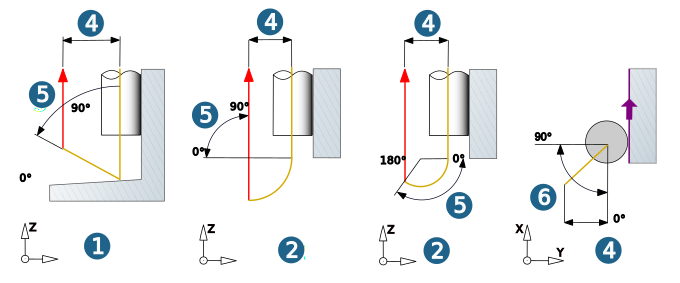

Parameters
Machining area / Allowances
Define start and end of the grooving motion with the values for Top and depth. Additional allowance XY / allowance Z: toolpath offset in the lateral or Z direction.
Infeed mode
Constant lateral infeed (1): Constant infeed in the XY plane over the entire contour. Specify the infeed in the XY plane using the value for the Lateral infeed.
Scallop height (2): Available for finishing only. The tool is run so that the defined scallop height is observed. Specify the automatically calculated lateral distance for tool grooving with the Scallop height value and the minimum infeed in the XY plane with Min. stepover.
 |
Retract movement
For the Roughing infeed strategy, the retract movement is always linear (1). For the finishing infeed strategy, the retract movement can be linear (1) or circular (2).
Use Retract distance (4) to specify the distance of the retract movement from the plunge movement and use the Axial retract angle (5) to define the angle for the retract movement in axial direction. Allowed values for the axial retract angle for vertical retract movement or withdrawal of for the roughing infeed strategy are between 0 and 90°, and for circular retract movement between 0 and 180°.
With the Plane retract angle (6), specify the angle for the retract movement in the XY plane (only available for the Roughing infeed strategy). Permissible values for the plane retract angle are between 0 and 90°.
|  |
Zigzag: The machining direction changes per section. The infeed movement follows the shortest path. The horizontal stepover between two adjacent sections takes place with the machining feedrate (G1) (1).
 |
Inclined plunging
An inclined Plunge movement (2) can be realized with the Plunge angle (1).
 |
Retract mode / Clearance
For further information, see sections Retract mode and Clearance.